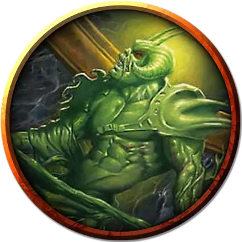

Нефритовая статуя вампира
Vampiric Jade Statue
Большой Конструкт, без мировоззрения

Класс Доспеха 14 (природный доспех)
Хиты 114 (12к10 + 48)
Скорость 30 футов
| мод | спас | ||
|---|---|---|---|
| СИЛ | 16 | +3 | +3 |
| ЛОВ | 14 | +2 | +2 |
| ТЕЛ | 18 | +4 | +4 |
| мод | спас | ||
|---|---|---|---|
| ИНТ | 6 | −2 | −2 |
| МДР | 10 | +0 | +0 |
| ХАР | 5 | −3 | −3 |
Уязвимость к урону силовое поле
Иммунитет к урону электричество, яд
Иммунитет к состояниям испуг, истощение, окаменение, отравление, очарование, паралич
Чувства тёмное зрение 60 футов, пассивное Восприятие 10
Языки понимает языки своего создателя, но не говорит
Опасность 8 (3900 опыта)
Бонус мастерства +3
Особенности
Неизменяемая форма. Статуя обладает иммунитетом ко всем заклинаниям и эффектам, изменяющим её форму.
Легендарное сопротивление (3/день). Если статуя проваливает спасбросок, она может вместо этого сделать спасбросок успешным.
Действия
Мультиатака. Статуя совершает три атаки: одну Укусом и две Когтями.
Укус. . Рукопашная атака оружием: +6 к попаданию, досягаемость 5 футов, одна цель. Попадание: 10 (2к6 + 3) колющего урона. Если целью является существо, это существо становится проклятым статуей. Проклятие длится 10 минут. Пока существо проклято, статуя совершает по нему все атаки с преимуществом.
Когти. Рукопашная атака оружием: +6 к попаданию, досягаемость 5 футов, одна цель. Попадание: 10 (2к6 + 3) рубящего урона.
Легендарные действия
Статуя может совершить 3 легендарных действия, выбирая из представленных ниже вариантов. За один раз можно использовать только одно легендарное действие, и только в конце хода другого существа. Статуя восстанавливает использованные легендарные действия в начале своего хода.
Укус. Статуя совершает одну атаку Укусом.
Кровавый жнец. Все существа, в настоящее время проклятые статуей и находящиеся в пределах 20 футов от неё, получают 5 урона некротической энергией.
Перемещение. Статуя перемещается на свою скорость, не провоцируя атак.
Описание
Большая, искусно вырезанная нефритовая статуя вампира охраняет туннели на острове Аббатства, будучи вызвана к жизни темной магией. Её каменные клыки высасывают кровь, которую она затем использует, чтобы наложить проклятие на своих жертв.